PRODUCT DESIGN2024 - 2026
先知命局 SeerQ DESIGN
面向全球用户的数字命理产品设计，围绕内容阵地、咨询转化、海外适配与视觉统一，持续迭代产品体验。

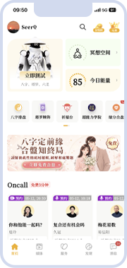
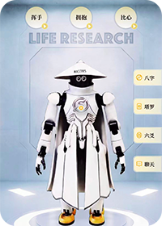
AI PRODUCT DESIGN2026
AI 六爻卜卦
以 AI 工作流重构传统六爻占卜体验，覆盖智能寻物、摇卦排盘、结果分析与组件化交付，让抽象卦象更易理解与操作。
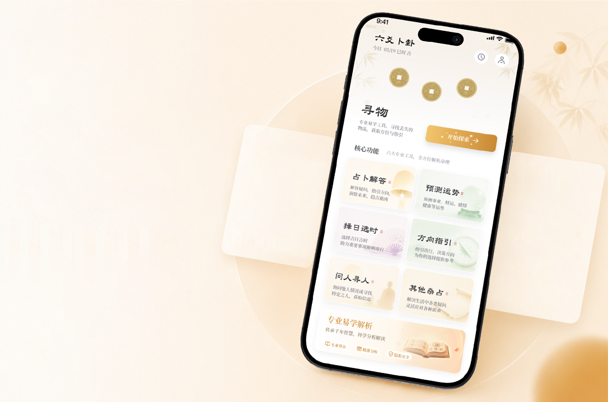
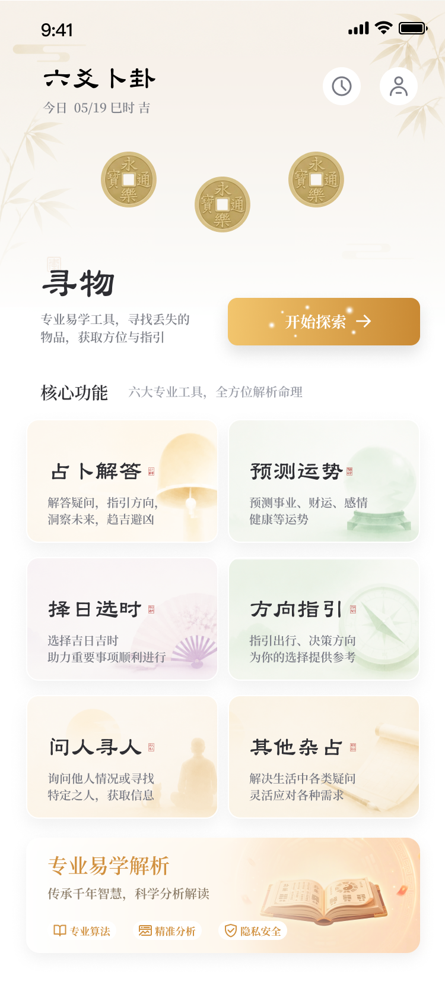
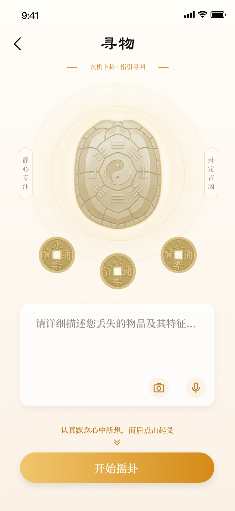
AI WORKSPACE DESIGN2026
智能后台
先知命局 APP 平台运营工作台，连接交易订单、商品库存、导师与会员管理，结合小知 AI 对话组织日常运营。
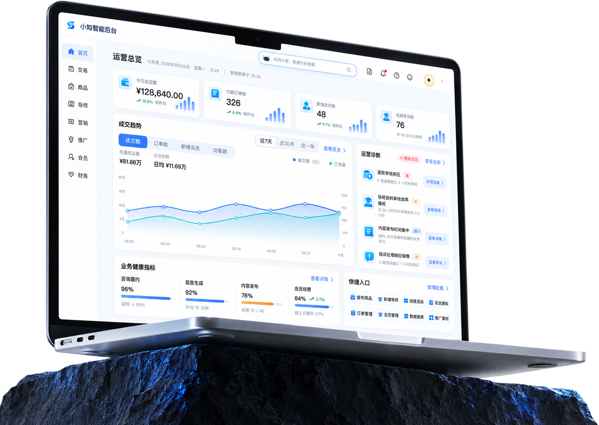
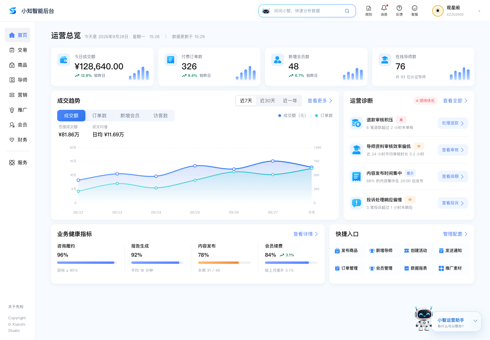
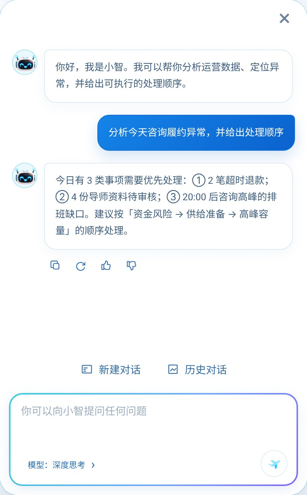
WEB DESIGN2025
枫燧堂（香港）PC 端官网
整合法会预约、八字测算、道教文化和公益服务，搭建中式视觉体系与模块化 PC 官网浏览体验。

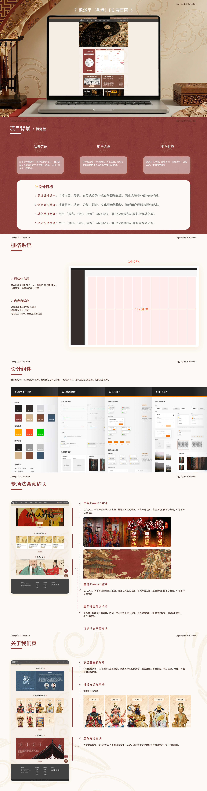
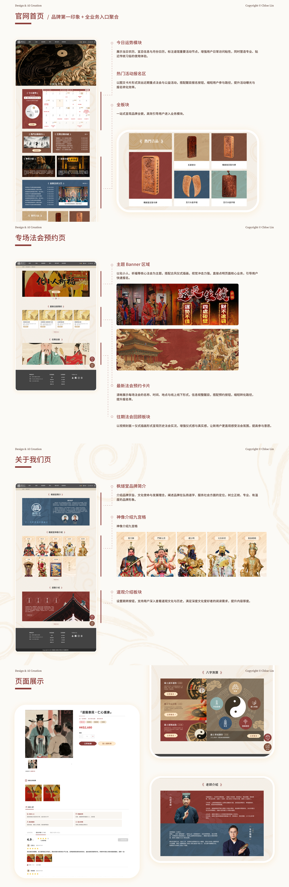
VISUAL DESIGN2025
运势专题改版
通过视觉升级、体验优化与结构重构，解决命理 H5 视觉杂乱、转化路径模糊与用户信任感不足的问题。
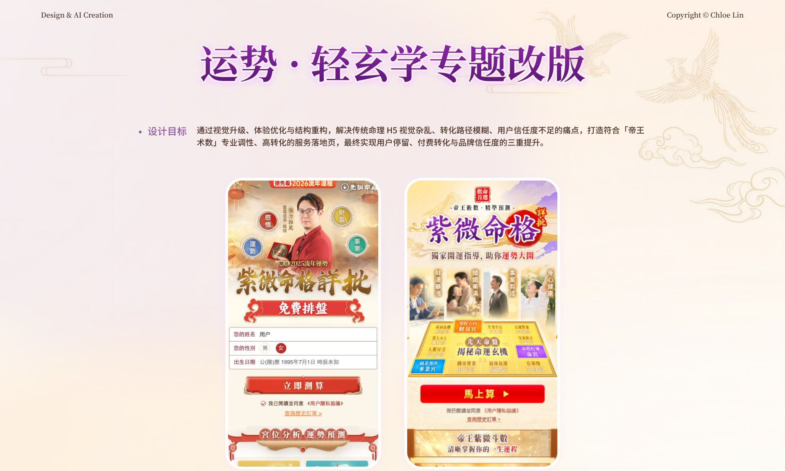
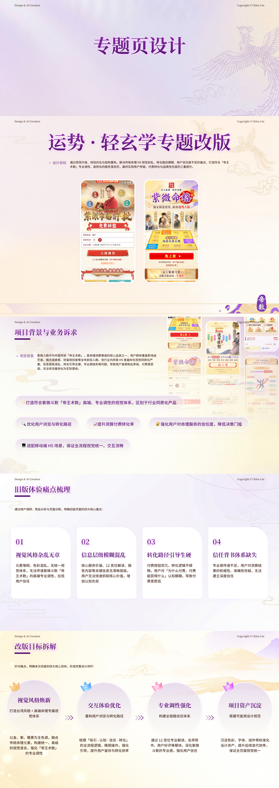
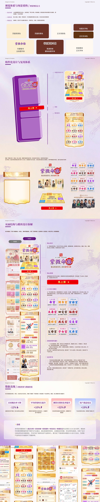
VISUAL DESIGN2024
海外中文 · 视觉专题设计
面向海外华人的 11 个命理专题 H5：每个题材独立主视觉，并沉淀一套可复用的组件体系。

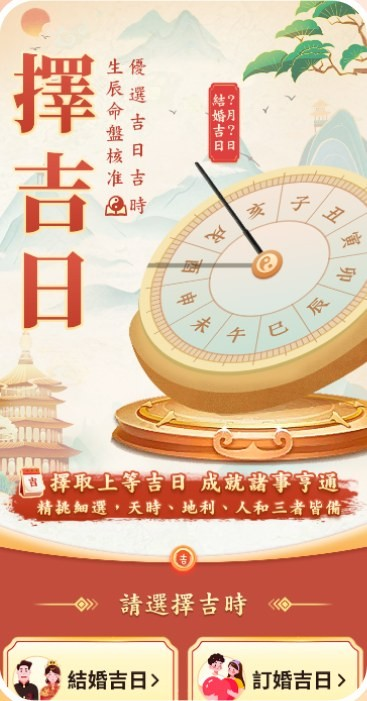
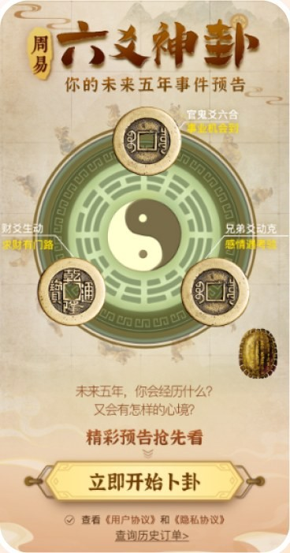
VISUAL DESIGN2025
海外英文 · 视觉专题设计
面向欧美、东南亚的英文命理 H5：手相预测与 SeerQ 三源命理两个专题，覆盖主视觉、组件体系与付费转化链路。

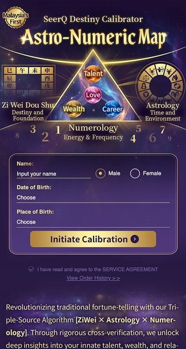
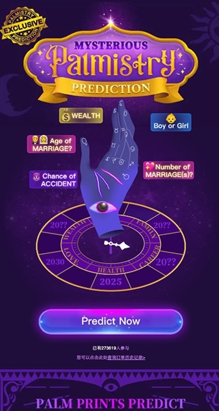
AIGC VISUAL2025 - 2026
运营活动视觉设计
AIGC 赋能海外新年活动视觉设计，从主视觉概念、互动场景到落地页与延展素材，形成完整活动表达。
OPERATIONS VISUAL2025
运营素材 · 弹窗与广告 Banner
面向海外繁体用户的活动弹窗、咨询入口与抽牌广告 Banner。弹窗讲清一个利益点，Banner 固定版式、按主题换肤，支撑节日活动与日常投放快速上新。
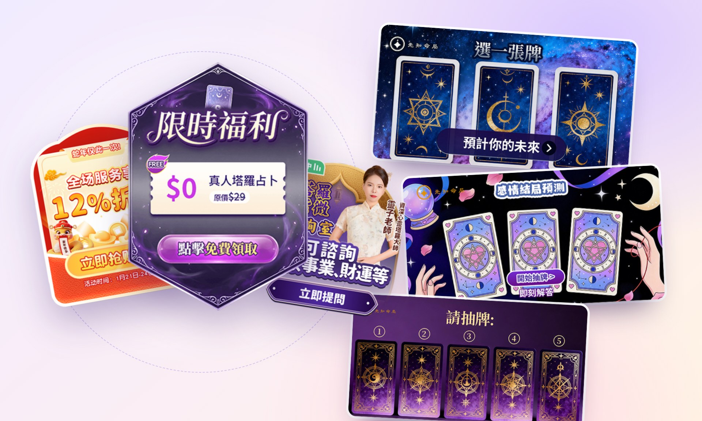
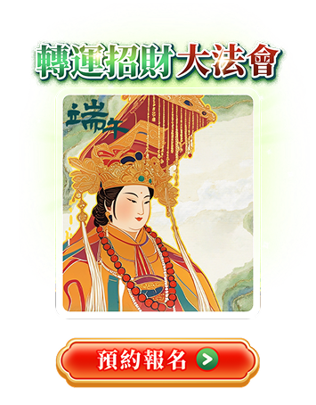